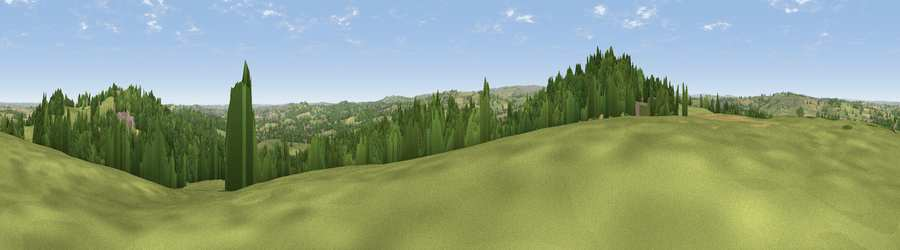

Viewpoint near Scissett
#23849 in England · top 41% of its area beats it · near ScissettWhere it is
The exact computed spot (SE 25975 09325). Click the marker for map links.
The view, rendered

A 360° render of this exact spot computed from the terrain model, tree cover and land cover — summer colours, afternoon light, calibrated against photographs of famous viewpoints. Real trees, hedges and buildings will differ in detail.
The panorama
Grey silhouette: terrain skyline in each direction (720 bearings, Earth curvature and refraction included). Dashed green: skyline with trees (+15 m) and buildings (+8 m) as obstacles. Blue strip: how far the ground is visible on each bearing.
Where the view opens
Wedge length = distance to the farthest visible ground on that bearing (vegetation-aware). Rings at 10, 25 and 50 km.
What fills the view
47% grassland · 34% woodland · 16% cropland · 4% built-up
Angular shares of the visible panorama (visual magnitude), not map area. Landscape diversity 0.50 (0–1 Shannon).
Key numbers
More beautiful places nearby
The staircase of upgrades: each row has a higher view potential than everything closer. Driving times are estimates from straight-line distance, calibrated against real road routing — check an actual route before setting out.
| Place | Direction | Drive | Score |
|---|---|---|---|
| Viewpoint near Scissett | W · 1 km | ~2 min | 52.0 |
| Viewpoint near High Hoyland | NE · 1 km | ~3 min | 58.4 |
| Pool Hill | WSW · 1 km | ~4 min | 66.6 |
| Viewpoint near Hoylandswaine | S · 5 km | ~10 min | 71.8 |
| Viewpoint near Hoylandswaine | S · 5 km | ~11 min | 72.7 |
| Viewpoint near Jackson Bridge | WSW · 8 km | ~17 min | 73.5 |
| Viewpoint near Wharncliffe Side | SSE · 14 km | ~25 min | 75.0 |
| Viewpoint near Wharncliffe Side | SSE · 14 km | ~25 min | 75.2 |
53.57988, -1.60916 · source: screening · position refined by local search. Computed location — check access rights before visiting.